| 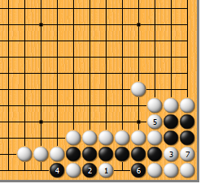 | 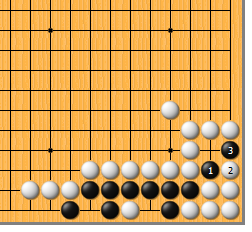 | |
| 图1 这道题可谓“倒脱靴”的精品之作。白1靠入，手筋！黑2如遮断，明眼人一看就知道黑气紧。白3断，黑没有办法只好4位提，白乘机5、7吃黑四子。
| 图2 然而，黑可1位吃白的“倒脱靴”。白干脆连弃六子，让黑于3位提……
| |
|
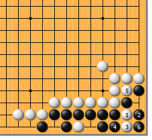 |
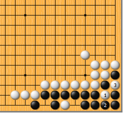 | |
图3 白1再断，黑2打，白3长，不依不饶。黑4、白5后，黑6提……
| 图4 白1扑，黑2提，白3提，结果成劫。此变化长达19手，要算清其中的变化，非“业5”以上棋力不可。 | |
|
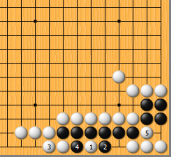 |
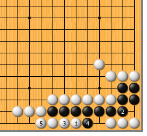 | |
图5 白1靠入时，黑2如内挡，不行。白3粘，黑如4位提，白5位断，黑两边不入子；黑4如5位粘，白4位粘，黑是“盘角曲四”，也不活。 | 图6 白1靠入时，黑2直接粘，如何？如此，白3粘即可，黑4打吃时，白5粘，仍是“盘角曲四”。
| |
| 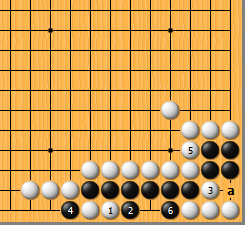 | 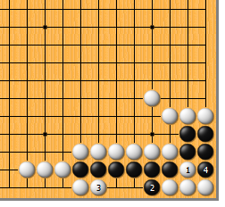 | |
图7 白1先冲行不行呢？黑2挡，白3断，黑4提，白5打吃时，黑6反打。接下来，a位提和4的右位粘成见合，黑净活。白1的冲给黑留了个后手眼，正是失败的原因。
| 图8 白1断，是最容易想到的。黑2打吃，白3冲，黑4提，然后…… | |
| 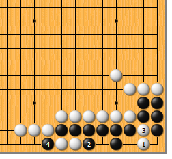 | 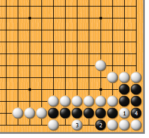 | |
图9 白1点，黑2挡，白3断，一切按部就班。看上去黑因气紧不能紧白二子的气，白可吃到黑五子，然而黑4提是先手，可以活一半。如此，做为死活题，白也算失败。
| 图10 白1断，黑2挡，白3再靠入，还来得及吗？正所谓“机不可失，时不再来”，黑4提后……
| |
| 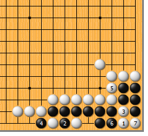 | 您的高见 | |
图11 白1点，黑2遮断，白3断入，黑4提，势所必然。白5打，吃黑五子，看起来黑已不行，然而黑6紧气，白7提时，黑可于3的上位吃白个“倒脱靴”！次序仅相差了一步，竟然得到完全不同的结果，真令人目瞪口呆。
|